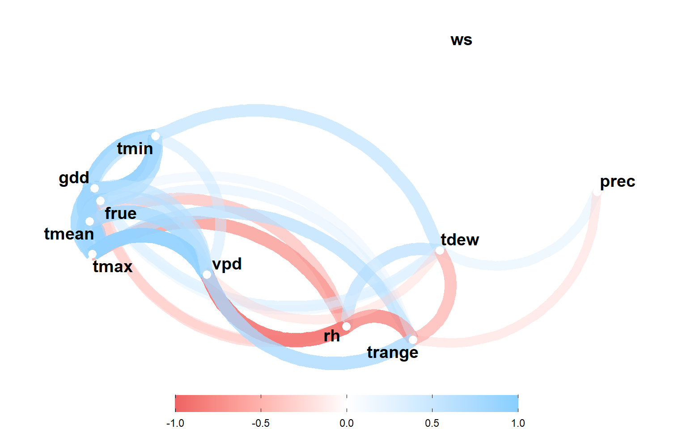

Supplementary figures
1 Distribution of climate variables
2 Correlation analysis

Figure 2.1: correlation analysis
3 Environmental tipology
3.1 etp
Figure 3.1: Potential evapotranspiration each environment (a), and mega-environment (b) across distinct crop stages of spring wheat.
3.2 rh
Figure 3.2: Relative humidity in each environment (a), and mega-environment (b) across distinct crop stages of spring wheat.
3.3 vpd
Figure 3.3: Quantiles for vapor pressure deficit in each environment (a), and mega-environment (b) across distinct crop stages of spring wheat.
3.4 prec
Figure 3.4: Quantiles for the rainfall precipitation in each environment (a), and mega-environment (b) across distinct crop stages of spring wheat.